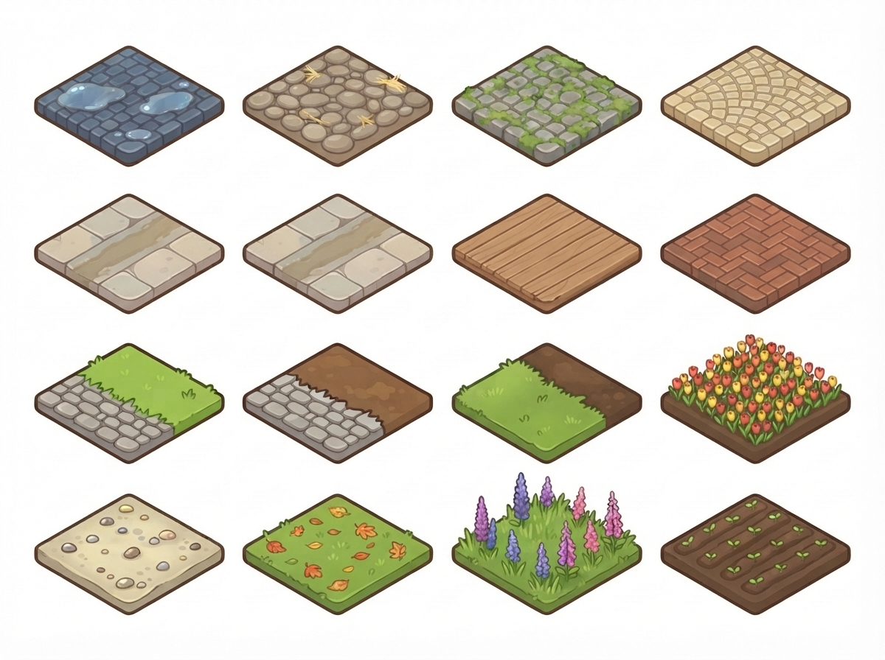

Green frame = the pick used in the game. To swap: python3 .claude/skills/openart-pictures/fetch.py pick sheet69-square-tiles-2 <version>, then import again.

Bright, friendly mobile-game cartoon in exactly the art style of reference image 1 (use it only for the style), with every slab made in exactly the same shape, size, angle and slab thickness as the slabs in reference image 2: thick rounded dark brown outlines, flat colours with simple cel shading, chunky cute proportions. A sheet of 16 more ground tiles for a village square, in 4 columns and 4 rows, numbered row by row. Every tile is ONE flat diamond-shaped paving slab seen from above at an isometric angle, exactly twice as wide as it is deep, with a thin slab edge visible along its two front sides, all sixteen the same size, the same angle and the same light from the top left. Each slab is one solid piece with its texture running right out to its four edges so that the slabs can be laid side by side; no objects standing on them, no loose bits beside them, no shadows outside the slab. Plain pure white background, evenly spaced with wide white space between the slabs, none touching, no text, no letters, no numbers, no labels, no captions under the slabs, no frames, no grid lines, no people, no animals. Row 1, cobbles: 1 dark blue-grey cobblestones after rain with two small shiny puddles; 2 warm-grey cobblestones with a few scattered wisps of yellow straw; 3 old grey cobblestones with green moss growing between the stones; 4 pale sandy-yellow cobblestones laid in fan-shaped curves. Row 2, paving: 5 big pale rectangular stone slabs laid in neat rows; 6 grey flagstones with a worn darker strip running from the lower left to the upper right like a much-walked path; 7 light brown wooden planks laid side by side like a small market stage, running from the lower left to the upper right; 8 dark red-brown clinker bricks laid in neat rows. Row 3, edges and flower beds: 9 pale stone slabs on the lower left half and green grass on the upper right half, meeting along a ragged diagonal line; 10 pale stone slabs on the lower left half and brown soil on the upper right half, meeting along a ragged diagonal line; 11 green grass on the lower left half and brown soil on the upper right half, meeting along a ragged diagonal line; 12 dark brown soil with a bed of red and yellow tulips. Row 4, ground: 13 pale yellow-grey sand with small pebbles; 14 green grass with fallen orange and red autumn leaves; 15 green grass with tall purple and pink wildflowers; 16 dark brown soil with neat rows of small green seedlings.